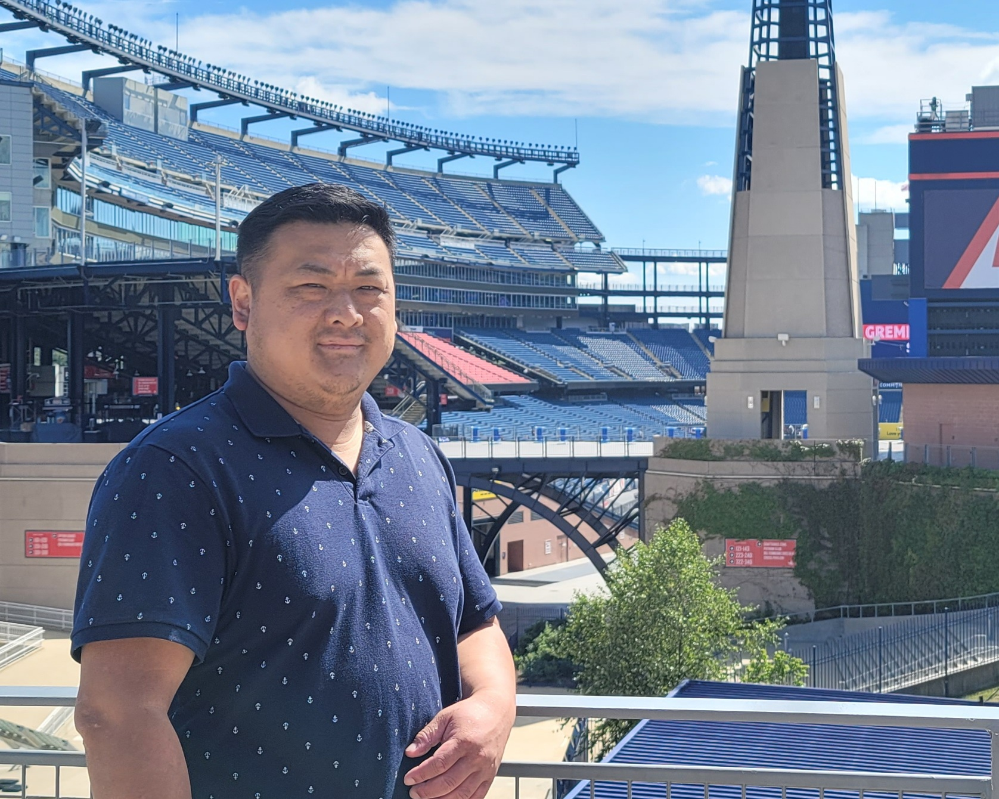

Tou Xiong
tou.xiong@pdx.edu
503-123-4567
Education
- 2015-2018: Portland Community College
- Earned Associates of Science Degree
- 2018-Present: Portland State University
- Pursuing Bachelors in Computer Science
- Expected Graduation Date: 01/01/2024
Work History
- 2003-2021: Maxim Integraged Products, Equipment Tech 3
- Perform Preventative Maintenance on multiple toolsets
- -Novellus, AST, RTA, Sorters, Atlas, Edwards Pump
- Recover and troubleshoot tools when faults occur
-
Responsible for installing and teaching robots on multiple toolsets
- -AST, Sorters, Novellus
- 2021-Present: Intel Corp, AMHS MIT Tech
-
Help support the fabs, by maintaining and performing maintenance on
the automated vehicles and stockers
-
Manage and monitor automated vehicles using control systems such as
OHVC, AGVC, and MCS
-
Worked on innovation projects to help improve safety for human and
equipment
- -OHV G3-3x: Level 2 Certification
- -AGV: Level 2 Certification
- -CLS50 Stocker: Level 3 Certification